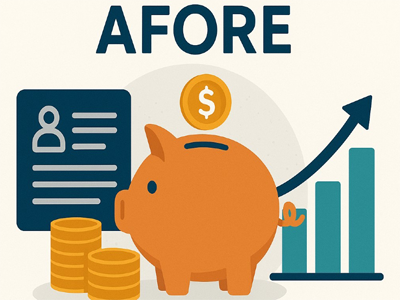

Planificación financiera para el retiro y seguridad social.
¿Qué es un sistema de pensiones?
Se conoce como sistema de pensiones a aquel que tiene como objetivo que los trabajadores tengan recursos, que les permitan alcanzar cierto nivel de consumo, en el momento de su retiro. Estos recursos son administrados por las Administradoras de Fondo para el Retiro, es decir las AFORE. Las pensiones en México pueden otorgarse por invalidez, vejez o cesantía en edad avanzada. Los planes también protegen al trabajador en caso de fallecimiento.
Sistemas de pensiones vigentes:
Pensión por Afore (Sistema de Contribución Definida)
Es el esquema que aplica para la mayoría de los trabajadores que comenzaron a cotizar ante el IMSS a partir de julio de 1997. Funciona como una cuenta individual: tú, tu patrón y el gobierno aportan un porcentaje de tu salario, y ese dinero se invierte a lo largo de tu vida laboral a través de una Afore.Lo que debes saber: el monto que recibas al jubilarte depende directamente de cuánto se acumuló en tu cuenta. No hay un monto garantizado. Si ahorraste poco o tu Afore tuvo rendimientos bajos, tu pensión será baja.
Pensión del IMSS (Ley 73 — Beneficio Definido)
Si comenzaste a cotizar antes de julio de 1997, caes en este esquema. Aquí la pensión se calcula con base en tu salario promedio de los últimos cinco años y tus semanas cotizadas. Es un modelo más predecible porque sabes aproximadamente cuánto recibirás. Lo que debes saber: necesitas un mínimo de 500 semanas cotizadas (aproximadamente 10 años). Entre más semanas y más alto tu salario promedio, mejor será tu pensión. Muchas personas no saben que están en este régimen y no optimizan sus últimos años de cotización, lo cual es un error costoso.
Pensión del ISSSTE
Para trabajadores del gobierno federal. Funciona de manera similar al IMSS pero con sus propias reglas. A partir de 2007 también se dividió en dos esquemas: uno de beneficio definido (anterior) y uno de cuenta individual (nuevo). Lo que debes saber: si eres trabajador del estado, revisa en cuál esquema estás. Las condiciones de jubilación, edad mínima y años de servicio varían significativamente entre uno y otro
Planes Personales de Retiro (PPR)
Son productos financieros privados — como los que ofrece Zurich — que te permiten ahorrar de forma voluntaria para tu retiro con ventajas fiscales. Puedes deducir tus aportaciones ante el SAT hasta por el 10% de tu ingreso anual o hasta 152,000 MXN anuales (lo que sea menor). Lo que debes saber: un PPR no sustituye tu Afore, la complementa. Es la herramienta más poderosa que tienes para cerrar la brecha entre lo que tu Afore te dará y lo que realmente necesitas para vivir bien.
Pensiones privadas o empresariales
Algunas empresas ofrecen planes de pensión como parte de sus beneficios. Pueden ser de beneficio definido (te garantizan un monto) o de contribución definida (depende de lo acumulado). No todas las empresas los ofrecen y las condiciones varían mucho. Lo que debes saber: si tu empresa tiene un plan de pensión, entiéndelo a fondo. Pregunta cuánto aporta la empresa, cuánto aportas tú, qué pasa si cambias de trabajo y cuándo puedes acceder al fondo.


Ahorro voluntario.
El ahorro para el retiro es una de las herramientas más importantes para incrementar el monto de tu pensión IMSS en México, especialmente si cotizas bajo el Régimen 97. A través de realizar aportaciones voluntarias a tu Afore, puedes aumentar el saldo acumulado en tu cuenta individual, generar un mejor rendimiento Afore y mejorar tu estabilidad financiera a largo plazo.
¿Qué opciones existen para hacer ahorro voluntario?
Durante la conversación, se detalló que el dinero adicional que ingresas a tu cuenta individual no se limita únicamente al retiro, sino que puede adaptarse a distintas metas. De hecho, de acuerdo con el Gobierno de México, hoy en día existen más de 10 canales disponibles y seguros para realizar estos depósitos de forma fácil y accesible. Las opciones se dividen en: Ahorro a corto plazo: Útil para el regreso a clases, compra de útiles, uniformes, vacaciones o cualquier gasto previsible. Ahorrar durante unos meses puede evitar que estos compromisos se vuelvan una carga económica inesperada. Ahorro a mediano plazo: Ideal para objetivos como los quince años de un hijo, un enganche de auto o un proyecto personal especial. Ahorro a largo plazo: Enfocado en consolidar un ahorro para el retiro sólido, donde el tiempo y la constancia permiten que el dinero crezca de manera significativa gracias a que se genera un mayor rendimiento Afore.
Cómo prepararse para la jubilación
Comienza con lo básico: establece tus objetivos de jubilación con anticipación. Antes de sumergirte en planes de ahorro para la jubilación y estrategias de inversión, tómate un momento para visualizar tu jubilación ideal y determinar qué tipo de vida deseas. El primer paso es comprender y determinar cuánto dinero necesitarás para retirarte cómodamente. Si bien muchos expertos sugieren un objetivo de entre el 70% y el 80% de tus ingresos previos a la jubilación, la cifra real depende de tu estilo de vida, ubicación y salud. Factores como la vivienda, la atención médica o la inflación te ayudarán a establecer objetivos de ahorro realistas.
Consejos financieros para prepararte para la jubilación con cualquier presupuesto. Contrario a lo que puedas creer, no se necesita un salario alto para construir un plan de jubilación estable. Lo más importante es la constancia y una toma de decisiones inteligente, alineada con tu presupuesto. Empieza por hacer un seguimiento de tus gastos actuales y crear un presupuesto que priorice el ahorro. Incluso pequeñas aportaciones a una cuenta de jubilación pueden crecer significativamente con el tiempo gracias al interés compuesto.
Consejos prácticos para planificar la jubilación en la vida cotidiana. La planeación financiera es sólo una parte de la ecuación. Tus elecciones de estilo de vida diario también juegan un papel importante en tu preparación para la jubilación. Para muchos, mudarse a una casa más pequeña o a una zona más asequible (especialmente si ya no es relevante para el trabajo) puede liberar recursos y reducir el estrés. Recortar gastos innecesarios ahora puede ayudar a ahorrar más para el futuro.
También es recomendable crear un fondo de emergencia específicamente para la jubilación. Procura reservar de seis a doce meses de gastos de manutención para cubrir gastos inesperados, como reparaciones del hogar o facturas médicas. Y hablando de atención médica, la atención a largo plazo es uno de los gastos más subestimados durante la jubilación.
Prepararse para la inflación y los gastos en sanidad. El seguro de salud para jubilados (y los gastos asociados) es otra consideración importante. Es posible que tu seguro de salud no lo cubra todo, así que explora seguros complementarios o cuentas de ahorro para salud mientras todavía estás trabajando.